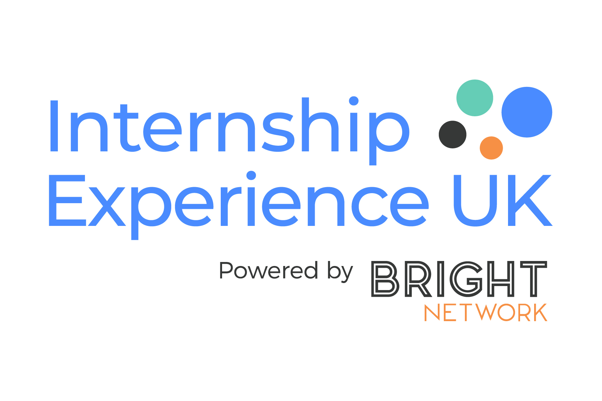

I'm Sodiq, a computer science undergraduate who enjoys programming. Although having no experience before starting at University, I've been working hard ever since to refine my programming skills.
Resume

Technology Internship Experience UK (Bright Network)
Engaged with representatives from renowned organisations (Lloyds, PWC, Amazon) and other industry leaders to explore various roles in the technology sector, including cloud, gaining an in-depth understanding of responsibilities and requirements for each role.
Participated in a Lloyds-hosted hackathon, where I developed a presentation on new software benefiting small & medium enterprises on their path towards achieving net-zero carbon emissions.
Selected within the VIP top 50 applicants, leading to a face-to-face discussion with top representatives from Lloyds Banking Group, providing valuable insights into the technology career path.
Web Development Bootcamp (Udemy)
I am currently enrolled in a comprehensive 65+ hour web development course.
I have been gaining expertise in the latest technologies like JavaScript, React, Node, and Web3 development.
I have been refining my programming proficiency in both frontend (React) and backend (Node) development, whilst completing personal projects along the way..
Education
Currently studying computer science BSc at the University of Leicester
A level - Beths Grammar School
Mathematics- A
Biology- A
Chemistry- A
GCSE - Woolwich Polytechnic Secondary School
BTEC Business: Distinction*(Star)
Mathematics: Grade 9
Biology: Grade 9
Chemistry: Grade 9
Physics: Grade 8
Further Mathematics: Grade 8
Geography: Grade 7
Product Design: Grade 7
English Literature: Grade 7
English Language: Grade 6
PERSONAL PROJECTS
Built a website of my personal profile using HTML and CSS. The website adjusts and is compatible with both computers and mobile.
ACTIVITIES
I am the sports representative of the African and Caribbean Society at the University of Leicester.
During both secondary school and sixth form, I was selected as a member of the prefect team within my school to take on responsibilities and to help maintain a great learning and social environment.
I regularly exercise by going to the gym, I believe it keeps me disciplined and I enjoy it.